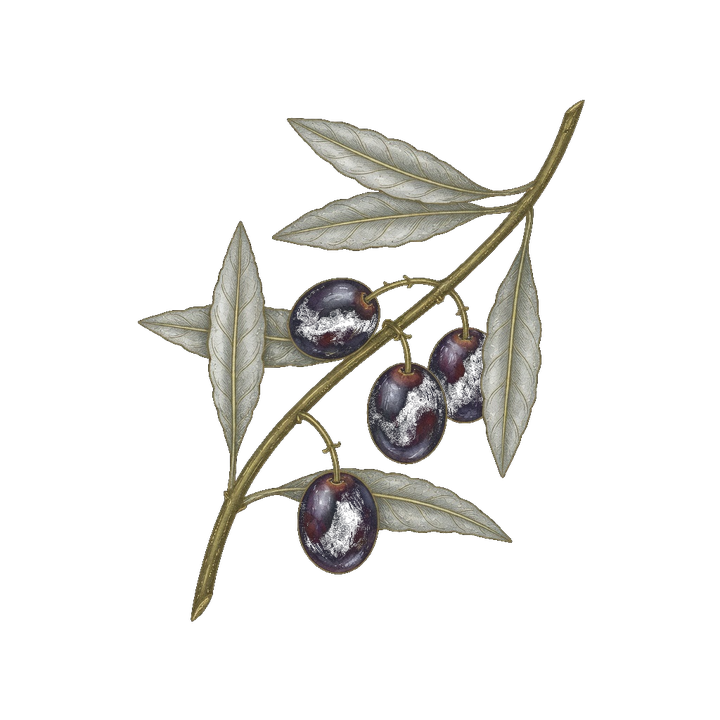
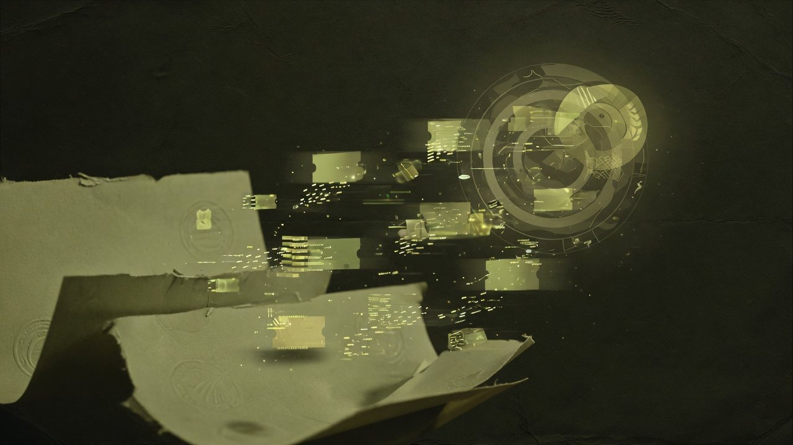
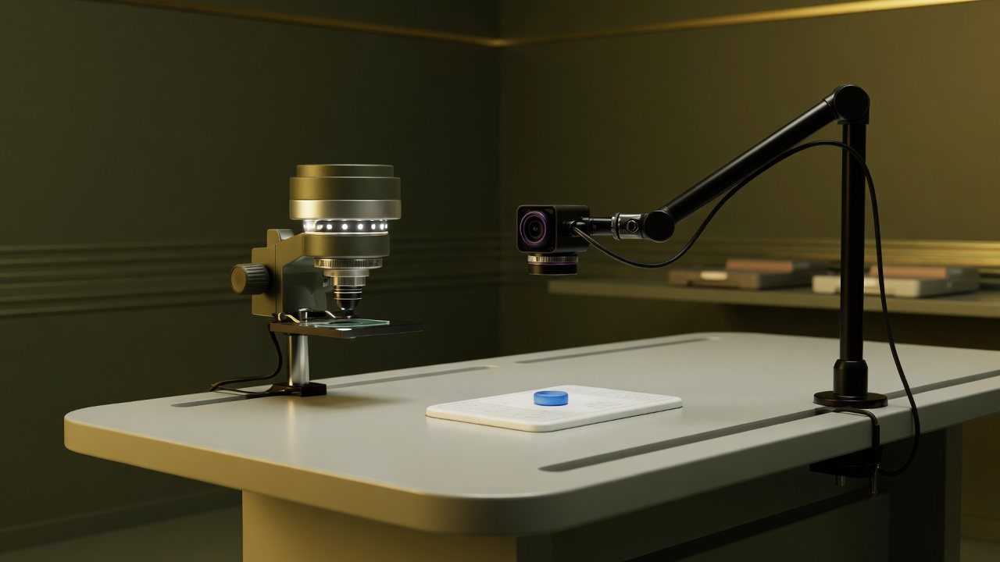

Qt / C++ · OpenCV
Generowanie szumu obrazu
Aplikacja desktopowa do zniekształcania zdjęć — zmiana kolorów, manipulacja pikselami, efekt rybiego oka, obrót, odbicie lustrzane. Służyła do budowy bazy obrazów pod trening modeli sztucznej inteligencji.

Software Developer · Wodzisław Śląski
Tworzę aplikacje desktopowe i systemy: automatyzację skanerów 3D, integrację z ePUAP, wizję komputerową i kopie zapasowe baz danych.
O mnie
Jestem programistą z Wodzisławia Śląskiego. Najwięcej czasu spędziłem przy aplikacjach desktopowych: Qt/C++ z OpenCV, C# i .NET, a także przy integracjach z systemami zewnętrznymi — Webcon, ePUAP, chmurą skanera 3D.
W Software Interactive przeszedłem drogę od praktyk, przez stanowisko Junior, do Software Developera. Wcześniej praktykowałem w JSW IT Systems w dziale wsparcia technicznego. Ukończyłem informatykę na Wydziale AEII Politechniki Śląskiej w Gliwicach.
Poza pracą czytam książki i powieści internetowe. Publiczne repozytoria trzymam na GitHubie.
Politechnika Śląska w Gliwicach, Wydział AEII
Politechnika Śląska w Gliwicach, Wydział AEII
im. 14 Pułku Powstańców Śląskich w Wodzisławiu Śląskim
Doświadczenie
Rozwój aplikacji desktopowych i narzędzi wewnętrznych w C# / .NET oraz Qt.
Implementacja funkcji produkcyjnych: integracje, automatyzacja skanowania 3D, kopie zapasowe baz danych.
Pierwsze projekty programistyczne w zespole produktowym.
Dział wsparcia technicznego.
Projekty
Qt / C++ · OpenCV
Aplikacja desktopowa do zniekształcania zdjęć — zmiana kolorów, manipulacja pikselami, efekt rybiego oka, obrót, odbicie lustrzane. Służyła do budowy bazy obrazów pod trening modeli sztucznej inteligencji.

C# · .NET · Webcon
Dodatki do Webcon: wysyłanie i odbieranie dokumentów jako wiadomości w ePUAP oraz cyfrowe podpisywanie zaufanym podpisem ePUAP. Rozszerzenie Visual Studio dla Webcon.
.NET Core 6
Aplikacja dla skanera Evixscan Quadro+: logowanie do chmury, pobieranie zleceń, automatyczne skanowanie obiektu, kalibracja płytką kalibracyjną, zatwierdzanie lub odrzucanie skanów i tworzenie nowych zleceń.
.NET Core · mongodump
Biblioteka do asynchronicznych kopii zapasowych Microsoft SQL Server i MongoDB — osobno albo jednocześnie — ze śledzeniem postępu i zdalnym połączeniem z wybraną bazą.

Qt / QML · C++ · MQTT · OpenVidu · LiveKit
Aplikacja kioskowa: stolik, kamera na twarz i kamera mikroskopu 3D. Kursy chirurgiczne, testy i egzaminy, połączenia zdalne między stacjami, podglądy kamer sterowane przez prowadzącego, integracja z biblioteką ffmpeg w C++ oraz analiza zabiegów modelami AI / wizją komputerową.
Na GitHubie są też m.in. strona parafii św. Wawrzyńca w Wilchwach oraz inżynierska aplikacja mobilna w Kotlinie. github.com/tomakor549
Umiejętności
Kontakt